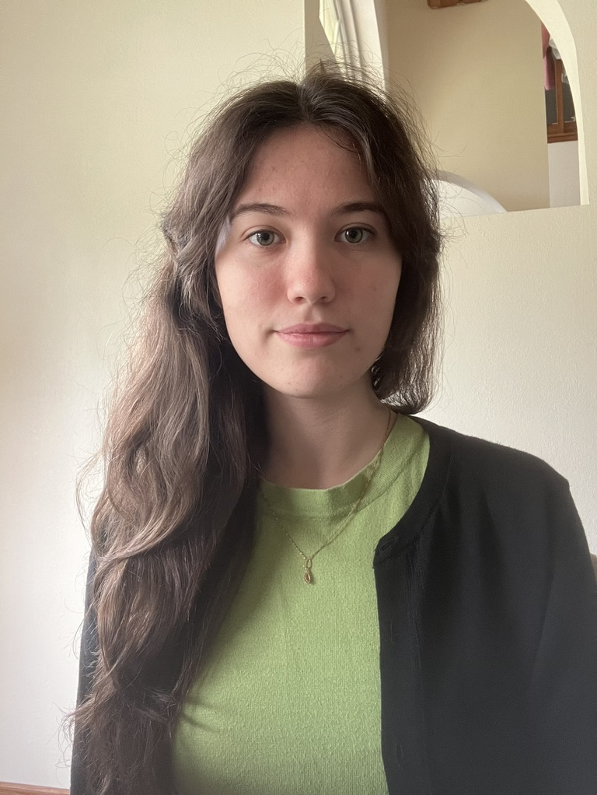

Hi, I'm
Austeja Ivanauskaite
I'm Austeja, and I am a 3rd-year student at University of Central Florida majoring in Information Technology, as well as minoring in Secure Computing and Networks! I am planning to graduate Spring 2028. I like cryptography, security, and building things that touch real hardware. Besides English, I speak Lithuanian fluently and am proficient in French. I am also fluent in Python, C, and JavaScript. I am certified in Microsoft Word, PowerPoint, and Excel, and have recently received my certification in CompTIA Technology Fundamentals. My academic interests include malware analysis, reverse engineering, computer vision, and embedded systems. Professionally, I am interested in DevSecOps and other cybersecurity roles.
Right now I'm working on a key management system, a machine-learning intrusion detection system, and a climate-controlled plant enclosure with my team.

Projects
Extracurriculars
Courses
Relevant coursework at UCF.
Thoughts & Explorations
Notes on things I'm learning, breaking, and figuring out.